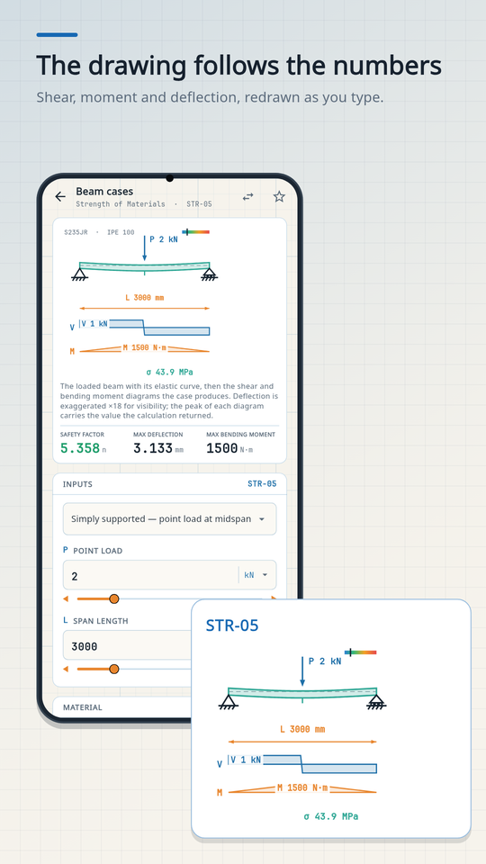
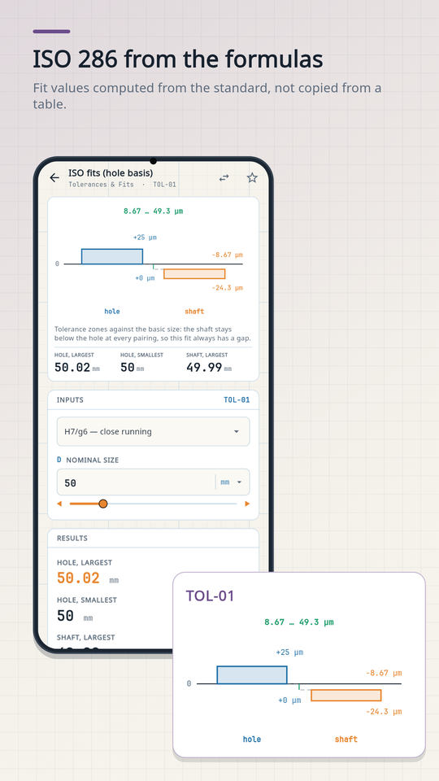
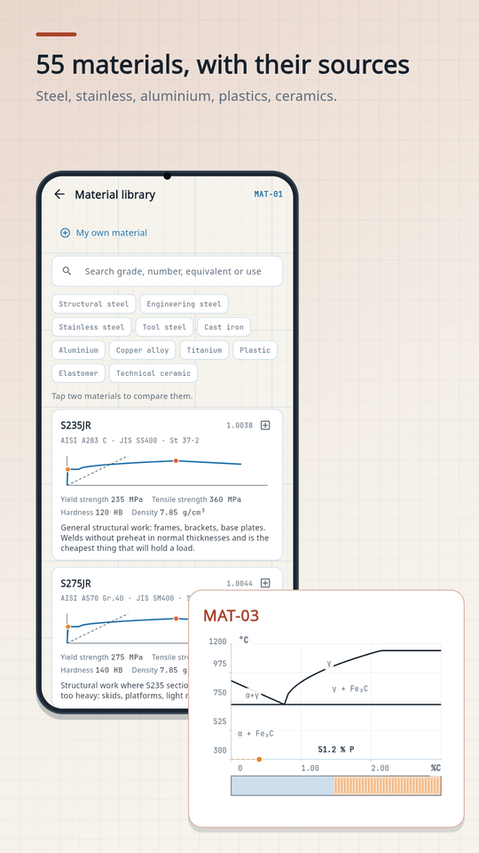

Engineering calculations you can cite.
230+ solved cases across 23 categories — every formula sourced, every result drawn live as a technical drawing. Fully offline, ad-free.
Built the way engineers work
Sources, not folklore
Every formula names its book or standard, down to the chapter or equation, and is tested against solved examples from the literature.
Live technical drawings
Supports, load arrows, dimension lines and section views — redrawn instantly as you change the inputs. No stock images.
Fully offline
No network connection of its own, no account, no ads, no tracking. Your calculations stay on your device.
ISO 286 fits, computed
Tolerance limits are calculated from the standard's own formulas instead of copied tables.
55-material library
Composition, mechanical properties, standard equivalents, heat-treatment states and machinability.
Units everywhere
A full unit converter one tap away on every screen; metric and US customary systems.
What it looks like
Screens from the app itself, with the drawing each one produces beside it.



Thirty seconds of it working
The load slider moved, and the curve, the diagrams and every number following it.
One purchase. Everything.
More than half of the app is free, forever. Pro is a single one-time purchase — no subscription — that unlocks:
- ✓Every calculation case, today's and future ones
- ✓PDF calculation reports
- ✓Saved projects, unlimited favorites and history
- ✓Professional sections of material cards
- ✓Comparison tools and custom materials
16 languages
English · Türkçe · Deutsch · Français · Italiano · Español · Português · Русский · 日本語 · 한국어 · 简体中文 · 繁體中文 · العربية · हिन्दी · Bahasa Indonesia · ไทย